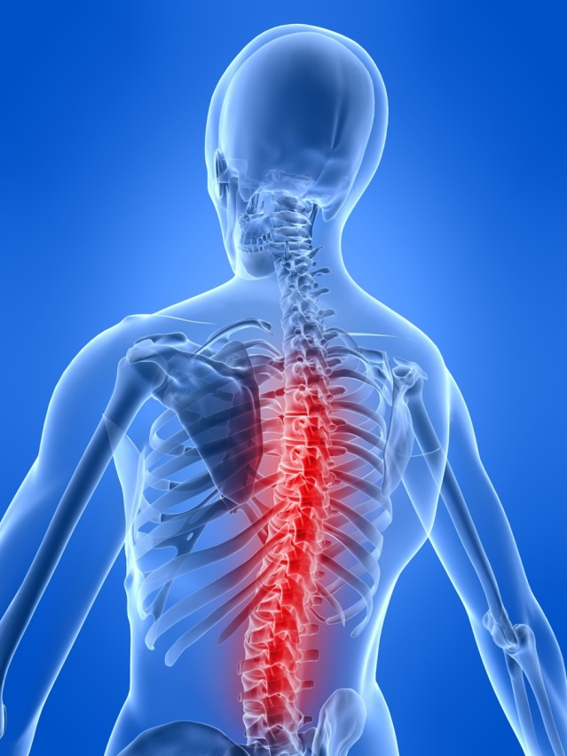
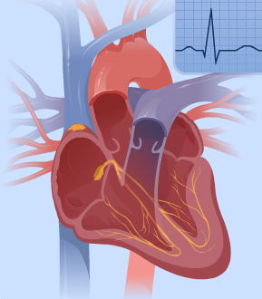
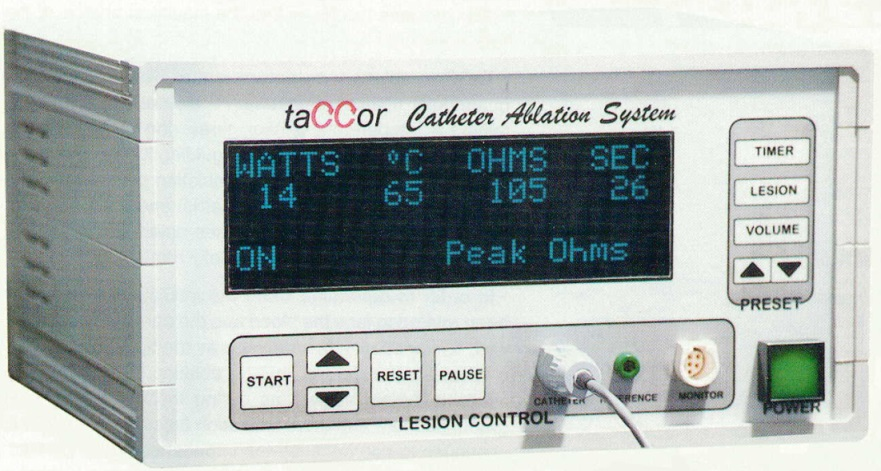
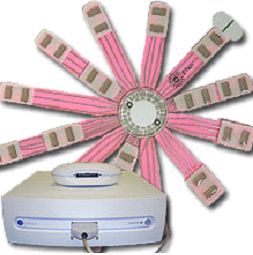
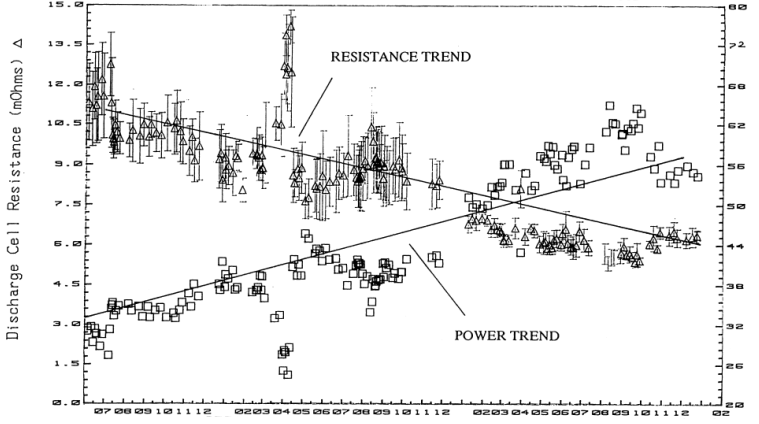
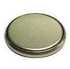
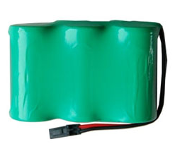
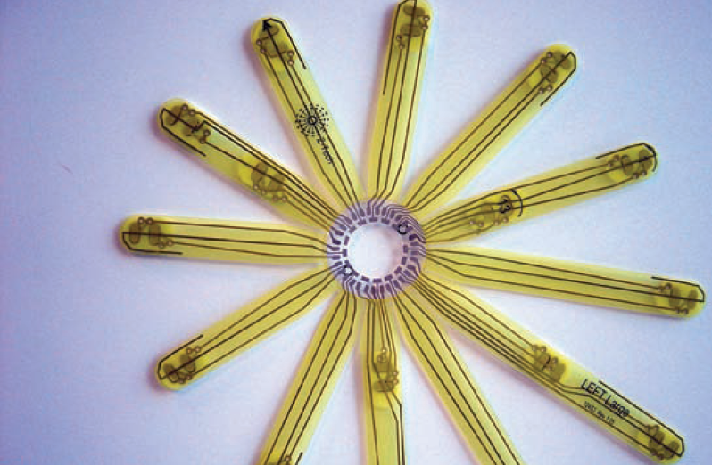

RF Lesion generators are used in conjunction with fine needle sets and cannula to treat back pain as well as in neurosurgery. They allow for the controlled creation of cauterized tissue with minimally invasive procedures

Cardiac Ablation
Cardiac ablation is used to treat arrhythmia by cauterizing a small area of tissue in the heart used small amount of RF at the end of a guided catheter.


Impedance Spectroscopy
Impedance Spectroscopy has been used in FDA trials to detect cancer without the use of X-Ray radiation.

Battery Systems Development and Evaluation
Implementers are coming to realize that rechargeable batteries are complex chemical systems that do not have the same dependability and resistance to abuse that ordinary components such as capacitors have. Iometric Systems can help implement systems that meet product lifetime and performance requirements.



Patient Electrode Development and Evaluation
Patient electrodes involve tradeoffs involving cost, size, contact resistance, skin irritation safety during defibrillation, shelf life and esthetics

Biological Transducer Interface
Common Biological Transducers include ECG, EEG and pressure transducers.